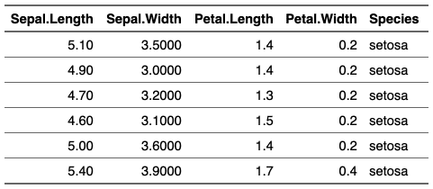

| set_formatter {flextable} | R Documentation |
Define formatter functions associated to each column key. Functions have a single argument (the vector) and are returning the formatted values as a character vector.
set_formatter(x, ..., values = NULL, part = "body") set_formatter_type( x, fmt_double = "%.03f", fmt_integer = "%.0f", fmt_date = "%Y-%m-%d", fmt_datetime = "%Y-%m-%d %H:%M:%S", true = "true", false = "false", na_str = "" )
x |
a flextable object |
... |
Name-value pairs of functions, names should be existing col_key values |
values |
a list of name-value pairs of functions, names should be existing col_key values.
If values is supplied argument |
part |
partname of the table (one of 'body' or 'header' or 'footer') |
fmt_double, fmt_integer |
arguments used by |
fmt_date, fmt_datetime |
arguments used by |
false, true |
string to be used for logical columns |
na_str |
string for NA values |

set_formatter_type is an helper function to quickly define
formatter functions regarding to column types.
This function will be deprecated in favor of the colformat_* functions,
for example colformat_double().
Other cells formatters:
colformat_char(),
colformat_datetime(),
colformat_date(),
colformat_double(),
colformat_image(),
colformat_int(),
colformat_lgl(),
colformat_num(),
compose()
Other cells formatters:
colformat_char(),
colformat_datetime(),
colformat_date(),
colformat_double(),
colformat_image(),
colformat_int(),
colformat_lgl(),
colformat_num(),
compose()
ft <- flextable( head( iris ) )
ft <- set_formatter( x = ft,
Sepal.Length = function(x) sprintf("%.02f", x),
Sepal.Width = function(x) sprintf("%.04f", x)
)
ft <- theme_vanilla( ft )
ft